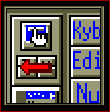

| My-T-Soft®: for Windows; Indestructible Keyboards and Indispensable Utilities; Version 1.80; User's Guide | ||
|---|---|---|
| Prev | Chapter 3. My-T-Soft Panels | Next |

The Magnifier will display a magnified view of the area where your Cursor (Pointer) is currently over. The Magnifier Panel magnifies anywhere on the screen and can magnify between 1x through 10x (2x default). This is very helpful when My-T-Soft is open as a small board. You still will be able to select all keys by looking at the magnifier. This is also an aid to the visually impaired. To select a different magnification, slide the cursor over the Magnifier panel and click - a menu with 1x to 10x selections will appear - select the desired magnification with the menu.
If you want to display the Cursor inside the Magnifier, run My-T-Soft Setup and click on "Configuration" | click on "Panels" | check "Display Cursor" On or Off, and click OK. Note that this is a reference cursor, not the actual cursor visible on the screen.